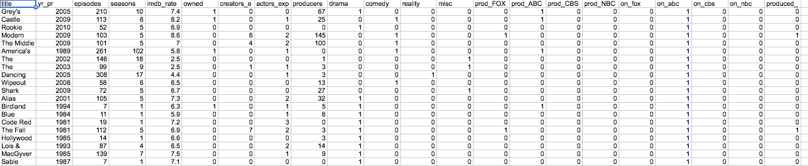
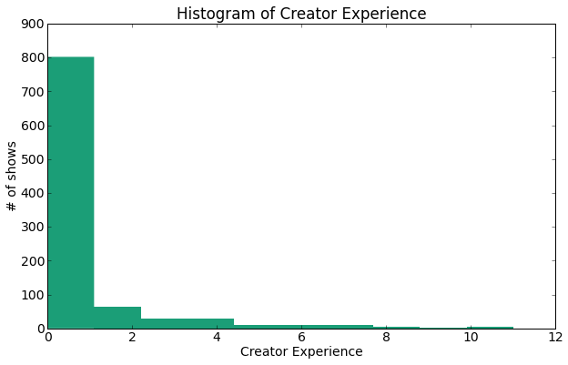
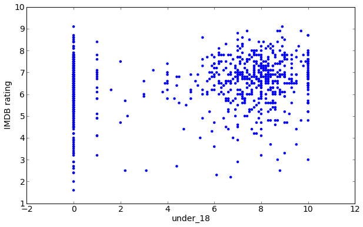
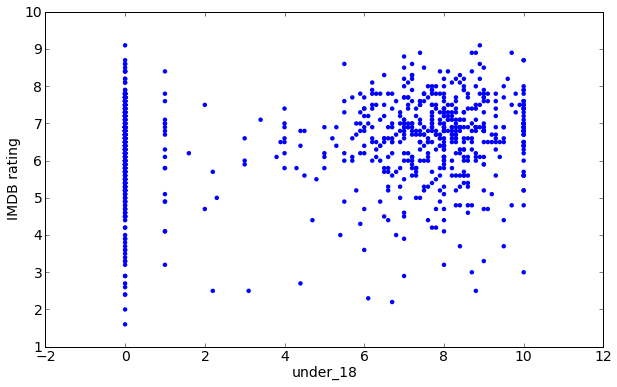

Background & Motivation
The world of television is rich with data. Unfortunately, the space of media and entertainment has long been sidelined in the academic world. One of the biggest concerns for the big broadcast networks (CBS, FOX, ABC, NBC) is the question of which factors will create a television show that will appeal the most to certain demographics. Advertisers usually pay for viewership in the coveted 18-49 (years of age) demographic, yet overall viewership numbers are usually touted in promotional material for television shows.Project Objectives
For this project, our group wants to explore the following questions:- Which number is more important, overall viewership or specific demographic viewership, in determining whether a show gets renewed?
- Can we determine which television shows may be more successful according to the acting/creative team, genre, or whether a show is owned by the network?
- Can we predict which television shows will be more popular among certain demographics (Under 18, Over 55, male/female, etc.)?
Project Overview
Our project aims to predict TV show popularity by analyzing roughly 950 existing TV series. We want to- find the factors of TV shows that influence their popularity,
- weigh the importance of different success factors of TV shows,
- quantify the success of each TV show based on its success factors,
- use the weights to come up with a prediction model for how successful a given TV show would be,
- Predict the success of past TV shows using previous data to confirm or reject our prediction model, and
- predict the future success of TV shows.
Data
The data will be scraped from IMDB. We are aiming to gather every show that was broadcast on ABC, NBC, CBS, and FOX from 1980 to 2010, with some exceptions. These exceptions include all news and sports shows, as they are distinguished from other original programming by their content. The data will include the premiere year, number of episodes and seasons, genre, top billed creators, top billed actors, production companies, IMDB rating, and network on which it aired. Furthermore, the IMDB rating will be divided into different demographics (as provided by IMDB): males, females, aged under 18, 18-29, 30-44, and 45+, IMDB Staff, US users, and Non-US users. Below are snippets of our dataset:TV show related info by Title
TV show Demographic Breakdown
Data Scraping
First, the title of every television show produced since the late 1940s to 2013 was collected manually from wikipedia and input in an excel document, then a scraper was built to scrape all of the information regarding each television show from IMDb. We output a csv file with 1820 observations representing all primetime television programs aired since 1947 on the big four networks (ABC, NBC, CBS, FOX). The information collected for each television show includes year of premiere, number of episodes, number of seasons, genre, IMDb rating, and network that aired the program. Additionally, information was collected on the top three-billed actors of the program, which on IMDb corresponds to the lead characters of a program. The top three-billed creators and top four-billed production companies were also collected. Unfortunately, much of the data is inconsistent or incomplete when it dates back prior to the 1980s. For this reason, the time frame for the regressions is limited to 1980 to 2010. The data was then cleaned up using Google Refine to fix inconsistencies, and especially to make sure that production company names were outputted in a consistent manner. Observations beyond the 1980-2010 time frame are dropped, leaving me with 969 observations. The variables that remain in their original form include year of premiere, number of episodes, number of seasons, and IMDb rating. Genre is consolidated into four main categories: comedy, drama, reality, and miscellaneous. These genre separations mirror those used by the major studios to appoint heads of program development to lead the comedy, drama, and alternative (reality and miscellaneous) divisions. Dummy variables are created for genre, network on which the program airs, network which produces the program (if applicable), whether the show is owned by the network on which it airs, and whether the show is owned by a different network from the one on which it airs. Finally, the creative, production, and acting experience and fame are quantified (in the above code). For each television program in this secondary set, the experience of the creative team is computed using the initial data set. Each instance of a creator's name appearing in the three top-billed creators of a television show prior to the premiere year of the program whose creative experience is being quantified counts towards an additional experience point. The same methodology is used for computing the fame and experience of actors and production companies. We produce the final dataset that is used for analysis. All of the variables from the previous set are transferred to the primary set. Additionally, each observation, representing a singular television program, is multiplied by the number of seasons of the television show, leading to 2674 total observations. This is done so that each observation represents a television program for a year of its production. The new variables include a dummy variable for season, representing the season at which the program is being produced, a dummy variable for renewed, representing whether or not a television program is renewed at the end of its season, and a dummy variable for the year of production. We then scrape information on IMDb ratings from different demographics, depending on availability.Analysis
The average rating of TV shows from our data: 6.51217750888 Total percent of good show: 56.862745098% Overall, there is a 0.569 chance that a show will be good (has a rating higher than average) if we guessed that a show is good, so we want our prediction to at least do better than this. First, we want to look at the different aspects of TV shows, including its creators' experience, producers' experience, network, genre, actors' experience, number of episodes, and number of seasons using the data set data_by_title_csv.csv that give us information about these factors of TV shows. We used Pearson Coefficient to observe the correlations between the different TV show factors and the shows' ratings. Pearson Coefficient = 0.109873434966 Pearson Coefficient = 0.0337295766234 Pearson Coefficient = -0.019460193323 Even though there is a very small negative correlation between actor experience and IMDB rating (very close to 0), intuitively we know that actor popularity and show popularity are definitely positively correlated. We found that producer experience had the highest pearson coefficient, and thus the most releveant to determining the success of a TV show, but the correlation is still very small. Pearson Coefficient = 0.0680643829736 Pearson Coefficient = 0.0672014572997 We can see with the scatter plots for IMDB rating v.s. # of episodes and rating v.s. # of seasons that there is a general trend for shows to have more episodes and seasons when they are rated higher. This is true intuitively as well that shows would run longer when they are more popular. However, the pearson coefficient is still very small so this argument requires more investigation. We then break down the data set by genre and related networks to further analyze TV ratings.- Average Rating of all shows: 6.51217750888
- Drama Average Rating: 6.8103352148
- Comedy Average Rating: 6.57560439934
- Reality Average Rating: 5.4827586069
- Misc Average Rating: 5.73775508469
- Production by FOX Average Rating: 6.68709679032
- Production by ABC Average Rating: 6.62972973514
- Production by CBS Average Rating: 6.73333333333
- Production by NBC Average Rating: 6.72307693077
- Shown on FOX Average Rating: 6.46431717974
- Shown on ABC Average Rating: 6.44074074926
- Shown on CBS Average Rating: 6.62274882559
- Shown on NBC Average Rating: 6.53831418314
Naive Prediction Models
Since we didn't find strong correlations between actor experience, creator experience, producer experience, and ratings, a naive prediction model would be to base the rating for a show on its initial rating extracted from its genre and associated networks. First, we considered the unweighed version of this prediction, where we take the average of the expected ratings of all three categories for a given show. This is going to be a very imprecise prediction, so we are going to go straight to finding its accuracy. We calculate this by comparing each prediction to the given rating. We can see that this unweighted prediction is overall within a standard deviation of 1 compared to true ratings. We will now try to computed a weighted version of this prediction and see if it improves the prediction by analyzing the error histogram once again. To observe the new weights computed with linear regression, we use the coefficients to weigh the three factors of ratings in TV shows and plot the error once again. We know that the weighted prediction is going to be very off just by analyzing the coefficients. Since our original unweighted prediction gives an error of 0 most of the time, this new weighted prediction will bring the predicted ratings down. To show this, we perform the graphic analysis like we did above with the coefficients as follows: Coefficients for the three categories:- genre: 0.74191428
- production network: -0.02794701
- showing network: -0.22174187
Machine Learning
Part 1.
We look at several classification methods to predict the IMDB rating of each TV show. In our first approach, we only consider features with binary values and binary outputs. Therefore, we classify any TV show that has a rating greater than the mean of all IMDB ratings in the dataset as a 'good' TV show, and everything else as a 'bad show'. We look at the binary features: 'owned,'drama','comedy','reality','misc','prod_FOX','prod_ABC','prod_CBS','prod_NBC','on_fox','on_abc','on_cbs','on_nbc','produced_diff' The classification methods we use are:- Naive Bayes classifier for multivariate Bernoulli models (takes in binary features to predict a binary output)
- Logistic Regression
- Decision Tree Classifier
- Random Forest Classifier (fits and averages out a number of decision trees to prevent over-fitting)
- Support Vector Machines
-
Naive Bayseian for multivariate Bernoulli
- training set accuracy: 0.608815426997 test set accuracy: 0.592592592593
-
Logistic Regression
- training set accuracy: 0.623966942149
- test set accuracy: 0.617283950617
-
Decision Tree
- training set accuracy: 0.646005509642
- test set accuracy: 0.617283950617
-
Random Forest
- training set accuracy: 0.646005509642
- test set accuracy: 0.617283950617
-
Support Vector Machines
- training set accuracy: 0.626721763085
- test set accuracy: 0.617283950617
Part 2.
In this part, we still look at binary features, but now we try to actually predict the IMDB rating instead of just classifying the moveis as either 'good' or 'bad'. Therefore, we replace the binary labels ('good_show') in the training and test sets with the actual IMDB rating ('imdb_rate'). We now measure accuracy in two ways.- If the predictor guesses the IMDB rating to be within a difference of 1.0 with the actual rating, we call this correct and calcuate the precentage of shows predicted correclty in the test set
- We calculate the mean square error and take the average across all the shows in the test set
- Logistic Regression
- Decision Tree Classifier
- Random Forest Classifier
- Support Vector Machines
-
Logistic Regression part2
- training set accuracy: 0.71349862259
- test set accuracy: 0.699588477366
- training set mean squared error: 1.42833341085
- test set mean squared error: 1.54720174222
-
Decision Tree part2
- training set accuracy: 0.668044077135
- test set accuracy: 0.650205761317
- training set mean squared error: 1.95323691168
- test set mean squared error: 2.21773663021
-
Random Forest part2
- training set accuracy: 0.681818181818
- test set accuracy: 0.670781893004
- training set mean squared error: 1.5555234303
- test set mean squared error: 1.48555559152
-
Support Vector Machine part2
- training set accuracy: 0.71349862259
- test set accuracy: 0.699588477366
- training set mean squared error: 1.42833341085
- test set mean squared error: 1.54720174222
Part 3.
We now add features that we think are more important that include creator experience, actor experience, and producer experience. These features are not binary features, and in this section we just add the raw values as features.-
Logistic Regression part3
- training set accuracy: 0.706611570248
- test set accuracy: 0.695473251029
- training set mean squared error: 1.48893946791
- test set mean squared error: 1.41744867202
- training set accuracy: 0.906336088154
- test set accuracy: 0.588477366255
- training set mean squared error: 0.673140489174
- test set mean squared error: 2.25716043333
- training set accuracy: 0.929752066116
- test set accuracy: 0.56378600823
- training set mean squared error: 0.336845720165
- test set mean squared error: 1.92205760486
- training set accuracy: 0.701101928375
- test set accuracy: 0.691358024691
- training set mean squared error: 1.46136365972
- test set mean squared error: 1.41436218971
Part 4.
Becuase most of the shows in the data set have a zero value for creator, actor, and producer experience, while a small number of shows have a very high number, we normalize these numbers and see how our accracy changes. We first plot the histogram for 'creators_exp', 'actors_exp', 'producers_exp' in the data set. 
-
Logistic regression part4
- training set accuracy: 0.709366391185
- test set accuracy: 0.703703703704
- training set mean squared error: 1.48501383658
- test set mean squared error: 1.33617295695
-
Decision Tree part4
- training set accuracy: 0.921487603306
- test set accuracy: 0.514403292181
- training set mean squared error: 0.550661140028
- test set mean squared error: 2.69921810395
- training set accuracy: 0.932506887052
- test set accuracy: 0.555555555556
- training set mean squared error: 0.341487598733
- test set mean squared error: 2.31991768313
- training set accuracy: 0.709366391185
- test set accuracy: 0.703703703704
- training set mean squared error: 1.48928381055
- test set mean squared error: 1.35148159465
Part 5.
We now combine the orignial data set with breakdown of the IMDB ratings. The breakdown tells us the demographic of the reviewers who rated the TV shows, and we use this data to represent viewership and how it affects the IMDB ratings. Pearson Coefficient = 0.049041351203 Pearson Coefficient = -0.0318468798828
Pearson Coefficient = 0.0335572036902
Pearson Coefficient = -0.0318468798828
Pearson Coefficient = 0.0335572036902
 Pearson Coefficient = 0.0231621701739
Pearson Coefficient = 0.0231621701739
 Pearson Coefficient = 0.0367677051007
Pearson Coefficient = 0.0285672448065
Pearson Coefficient = 0.0560664419064
Pearson Coefficient = -0.0217323960431
Pearson Coefficient = 0.00479670712013
Pearson Coefficient = 0.00835341098606
Pearson Coefficient = -0.00511070765299
Pearson Coefficient = -0.0204788133317
Pearson Coefficient = -0.0136411618912
Pearson Coefficient = -0.0271849778656
Now we are going ot plot the average rating of different viewer demographics against the actual IMDB ratings
Pearson Coefficient = 0.18956526632
Pearson Coefficient = 0.121677537629

Pearson Coefficient = 0.124572617011
Pearson Coefficient = 0.102069314928
Pearson Coefficient = 0.106698329285
Pearson Coefficient = 0.120486298978
Pearson Coefficient = 0.0367677051007
Pearson Coefficient = 0.0285672448065
Pearson Coefficient = 0.0560664419064
Pearson Coefficient = -0.0217323960431
Pearson Coefficient = 0.00479670712013
Pearson Coefficient = 0.00835341098606
Pearson Coefficient = -0.00511070765299
Pearson Coefficient = -0.0204788133317
Pearson Coefficient = -0.0136411618912
Pearson Coefficient = -0.0271849778656
Now we are going ot plot the average rating of different viewer demographics against the actual IMDB ratings
Pearson Coefficient = 0.18956526632
Pearson Coefficient = 0.121677537629

Pearson Coefficient = 0.124572617011
Pearson Coefficient = 0.102069314928
Pearson Coefficient = 0.106698329285
Pearson Coefficient = 0.120486298978
 Pearson Coefficient = 0.155767599922
Pearson Coefficient = 0.030222379868
Pearson Coefficient = 0.155767599922
Pearson Coefficient = 0.030222379868
 Pearson Coefficient = 0.188162569121
Pearson Coefficient = 0.180175100128
Pearson Coefficient = 0.109712656355
Pearson Coefficient = 0.131240090621
Pearson Coefficient = 0.0818181545297
Pearson Coefficient = 0.0697279058904
This set of graphs is plotted with the ratio of different demographics compared to each show's total number of viewers and the demographics' respective IMDB ratings. We computed the Pearson Coefficients for the various groups of viewers, and even though no coefficient was strong enough to stand out and have us conclude a demographics' direct relationship with the overall ratings, the scatter plots intrigued us to explore the relationship between the different demographic distributions.
Pearson Coefficient = 0.188162569121
Pearson Coefficient = 0.180175100128
Pearson Coefficient = 0.109712656355
Pearson Coefficient = 0.131240090621
Pearson Coefficient = 0.0818181545297
Pearson Coefficient = 0.0697279058904
This set of graphs is plotted with the ratio of different demographics compared to each show's total number of viewers and the demographics' respective IMDB ratings. We computed the Pearson Coefficients for the various groups of viewers, and even though no coefficient was strong enough to stand out and have us conclude a demographics' direct relationship with the overall ratings, the scatter plots intrigued us to explore the relationship between the different demographic distributions.
Demographic Distributions
First of all, we broke the data set down into various age groups and analyzed them according to the gender ratio within those groups. We resized the graphs because the number of shows at when the number of females or males within an age range is undefined is not particularly interesting.
 Besides how central limit theory acts on our data giving us gender distributions that look very normalized within each age group, we can see that male viewers do tend to occupy more viewership even when broken down by ages, which is surprising to our group. This could be because we are naively assuming randomized IMDB user demographic as well as a randomized gender distribution, though it could be that more females watch TV shows but rate less compared to males, and the low number of ratings in viewers under 18 is most likely due to their age and infrequent usage of IMDB.
We then broke down the data set by looking at the female and male viewers separately.
The age distributions for both genders are similar, and we overlaid the histograms to observe the ratio of each age group in comparison. The male distributions for age 18-29 and age 30-44 are much less distinct compared to the female viewer distributions for the same age ranges.
Top 5 shows with highest viewership(reviewing) ratio for each demographic
Besides how central limit theory acts on our data giving us gender distributions that look very normalized within each age group, we can see that male viewers do tend to occupy more viewership even when broken down by ages, which is surprising to our group. This could be because we are naively assuming randomized IMDB user demographic as well as a randomized gender distribution, though it could be that more females watch TV shows but rate less compared to males, and the low number of ratings in viewers under 18 is most likely due to their age and infrequent usage of IMDB.
We then broke down the data set by looking at the female and male viewers separately.
The age distributions for both genders are similar, and we overlaid the histograms to observe the ratio of each age group in comparison. The male distributions for age 18-29 and age 30-44 are much less distinct compared to the female viewer distributions for the same age ranges.
Top 5 shows with highest viewership(reviewing) ratio for each demographic
-
males_under_18
- High Society: 0.0724637681159
- Journeyman: 0.0714285714286
- Just for Laughs: 0.0560625814863
- The Apprentice: Martha Stewart: 0.0555555555556
- Molloy: 0.0524861878453
-
males_aged_18_to_29
- Kitchen Confidential: 0.6
- Malcolm in the Middle: 0.542579075426
- Point Pleasant: 0.508301365343
- The Office: 0.5
- Family Guy: 0.494984005397
-
males_aged_30_to_44
- Hollywood Beat: 0.681818181818
- Automan: 0.612012987013
- Oliver Beene: 0.6
- Sidekicks: 0.564935064935
- Touched by an Angel: 0.55625
-
males_aged_45
- "Good Morning, Miami": 0.5
- "Sister, Sister": 0.482142857143
- Enos: 0.461538461538
- The Hughleys: 0.454545454545
- Three Rivers: 0.434782608696
-
females_under_18
- "Goodnight, Beantown": 0.0557673975214
- Kidnapped: 0.0483592400691
- Molloy: 0.0438042620363
- Bones: 0.0391198306705
- Police Squad!: 0.0388753904894
-
females_aged_18_to_29
- Kidnapped: 0.48422044277
- "Two Guys, a Girl and a Pizza Place": 0.46357615894
- The Days: 0.444933920705
- Knight Rider: 0.424882186616
- Private Practice: 0.40582141815
-
females_aged_30_to_44
- The Young Riders: 0.361149110807
- Who Wants to Marry My Dad?: 0.346153846154
- Life with Lucy: 0.344827586207
- Coupling: 0.341666666667
- Diagnosis Murder: 0.333333333333
-
females_aged_45
- Ladies Man: 0.333333333333
- Haywire: 0.25
- Committed: 0.239130434783
- A Year in the Life: 0.225
- The New Odd Couple: 0.222222222222
- males_under_18
- misc: 0.00692919175677
- reality: 0.00451866199157
- comedy: 0.00366825036459
- drama: 0.00348013427645
-
males_aged_18_to_29
- misc: 0.249926183115
- reality: 0.23282453941
- comedy: 0.196001968013
- drama: 0.191484513223
-
males_aged_30_to_44
- drama: 0.261180482746
- comedy: 0.255400545757
- reality: 0.240528999775
- misc: 0.227975116582
-
males_aged_45
- drama: 0.117513911301
- comedy: 0.113134499368
- reality: 0.0894259480021
- misc: 0.0760019163711
-
females_under_18
- misc: 0.00337337073029
- drama: 0.00292402890044
- reality: 0.00288220860051
- comedy: 0.00268670532327
-
females_aged_18_to_29
- reality: 0.129749921166
- misc: 0.107830869493
- comedy: 0.105579465231
- drama: 0.10470946111
-
females_aged_30_to_44
- drama: 0.109214175322
- reality: 0.102226321255
- comedy: 0.0938916761083
- misc: 0.0700161049002
-
females_aged_45
- drama: 0.0541172035695
- comedy: 0.0437951764235
- reality: 0.0412458812061
- misc: 0.031927447877
-
Logistic regression part5
- training set accuracy: 0.69696969697
- test set accuracy: 0.736625514403
- training set mean squared error: 1.43681827427
- test set mean squared error: 1.5465021084
-
Decision Tree part5
- training set accuracy: 0.998622589532
- test set accuracy: 0.559670781893
- training set mean squared error: 0.0071625338843
- test set mean squared error: 2.12119337539
-
Random Forest part5
- training set accuracy: 0.998622589532
- test set accuracy: 0.559670781893
- training set mean squared error: 0.0071625338843
- test set mean squared error: 2.12119337539
-
Support Vector Machine part5
- training set accuracy: 0.699724517906
- test set accuracy: 0.740740740741
- training set mean squared error: 1.43336097623
- test set mean squared error: 1.53218111481
Moving forward, we want to investigate other data sources for factors in TV production and viewership in order to improve our prediction because one of the things we struggled with during this project was that the data sets had much weaker correlations than we expected.